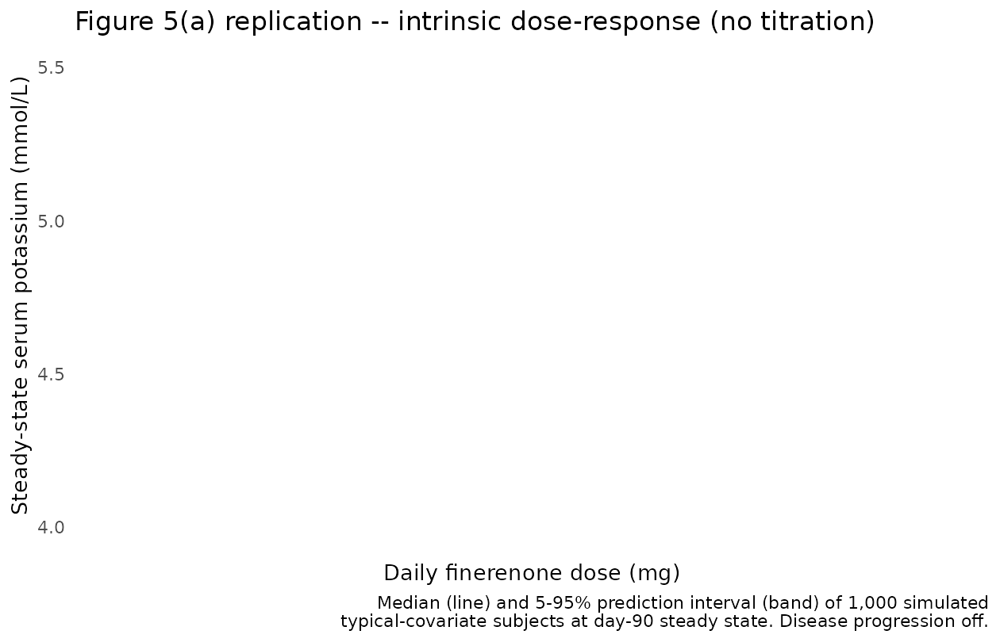
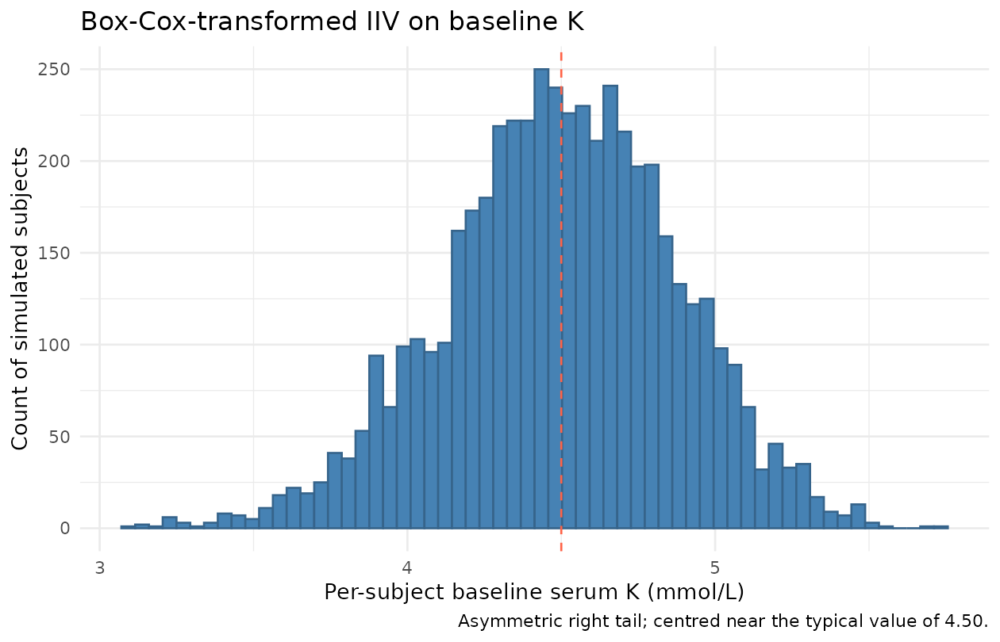

Finerenone serum potassium PKPD (Goulooze 2022)
Source:vignettes/articles/Goulooze_2022_finerenone.Rmd
Goulooze_2022_finerenone.RmdModel and source
- Citation: Goulooze SC, Snelder N, Seelmann A, Horvat-Broecker A, Brinker M, Joseph A, Garmann D, Lippert J, Eissing T. Finerenone Dose-Exposure-Serum Potassium Response Analysis of FIDELIO-DKD Phase III: The Role of Dosing, Titration, and Inclusion Criteria. Clin Pharmacokinet. 2022;61(3):451-462.
- Article: https://doi.org/10.1007/s40262-021-01083-1
- Open-access supplement (NONMEM control stream and simulation workflow): supplied with the article on the journal site.
This is a population PKPD turnover model for serum potassium under finerenone (a nonsteroidal selective mineralocorticoid receptor antagonist, MRA) treatment in patients with advanced chronic kidney disease and type 2 diabetes mellitus. The PD core is an indirect-response (turnover) model on serum potassium:
with steady-state initial condition and the Emax drug effect
The paper does not fit PK; it reuses individual posthoc PK estimates from the FIDELIO-DKD population PK analysis (van den Berg 2022) and reduces them to a single exposure scalar at the current dose level,
with apparent typical clearance
L/h (Goulooze 2022 Figure 5 caption). In this packaged model the same
exposure metric is reconstructed via podo(depot) / cl, so a
titration / interruption / re-initiation event simply changes the
most-recent depot dose amount and the model jumps to the new
AUC
step. There is no explicit absorption / disposition ODE; the depot
compartment is a virtual dose receiver only.
The disease-progression term
is a linear annual fractional shift on serum K. The typical TSLOPE
differs between the active-treatment and placebo arms (the active arm
has a 61% slower rate of progression), encoded here via the per-subject
ON_TREATMENT indicator.
Key features:
- Drug effect on K dissipation. Finerenone increases serum K by slowing the indirect-response loss term . At steady-state AUC, the typical fractional K increase equals EFF (because implies and for small EFF).
- Step-function exposure. Because AUC depends only on the current dose level (not the dose-time-profile), the drug effect is a step function in time that changes only at titration / interruption / re-initiation events. The short finerenone half-life (~2.7 h, Goulooze 2022 Section 2.2) makes this a good approximation.
- Covariates. Baseline K is shifted by Japanese ancestry (-3.62%) and by baseline eGFR (CKD-EPI; power exponent -0.0429 around 45 mL/min/1.73 m^2). Emax is shifted by baseline eGFR (power exponent -0.305), baseline UACR (linear centred at 800 mg/g), and female sex (-14.3%). The disease-progression slope is shifted by baseline K and by baseline UACR.
- Box-Cox-transformed IIV on baseline K, plus proportional IIV on Emax with correlated 2x2 omega block.
- Drug-titration paradox. A key qualitative result of the paper is that potassium-guided dose titration inverts the apparent dose-response: patients on higher doses show lower serum K because the titration algorithm down-titrated everyone whose K rose above the threshold. The intrinsic dose-response (no titration) is reproduced below; reproduction of the titration-induced apparent inversion is a future stochastic-simulation use case for downstream users (the supplement’s NONMEM titration logic is available there).
Population
- FIDELIO-DKD: international randomized, double-blind, placebo-controlled Phase III trial in patients with chronic kidney disease and type 2 diabetes mellitus (NCT02540993; Bakris et al. 2020, N Engl J Med 383:2219-29).
- N subjects: 10,070 contributed 148,384 serum potassium observations (62,401 local-lab, 85,983 central-lab). The PD analysis pool includes 5,674 FIDELIO-DKD randomized subjects (2,841 placebo, 2,833 active treatment) plus 4,396 screening failures (subjects who did not meet the serum potassium inclusion criterion but met eGFR criteria).
- Disease state: advanced CKD (eGFR 25 to < 75 mL/min/1.73 m^2 at run-in / screening) with T2DM on a maximum tolerated labeled dose of an ACE inhibitor or angiotensin II receptor blocker.
- Baseline eGFR: median 43.0 (5th-95th percentile 26.7-66.9) mL/min/1.73 m^2.
- Baseline UACR: median 852 (5th-95th percentile 140-3,366) mg/g.
- Dosing: oral finerenone 10 mg or 20 mg once daily; starting dose was assigned by screening eGFR (10 mg for eGFR 25 to < 60; 20 mg for eGFR >= 60); uptitration to 20 mg permitted from the month-1 visit onward when local-lab serum K was <= 4.8 mmol/L and eGFR had not dropped > 30%; dose was interrupted when local-lab K > 5.5 mmol/L. Average dose-level over follow-up: 15.1 mg.
- Median follow-up: 2.6 years.
The same metadata is available programmatically via
readModelDb("Goulooze_2022_finerenone")$population.
Source trace
Per-parameter origins are recorded as in-file comments next to each
ini() entry in
inst/modeldb/specificDrugs/Goulooze_2022_finerenone.R. The
table below collects them in one place.
| nlmixr2 parameter | Final estimate | Source location (Goulooze 2022) |
|---|---|---|
lcl (fixed) |
log(28.0) | Fig 5 caption: “typical finerenone clearance of 28.0 L/h” (upstream van den Berg 2022 popPK) |
lbaseK |
log(4.50) | Table 1 theta_pop,BSL = 4.50 mmol/L (RSE 0.140%) |
lkin |
log(0.00981) | Table 1 theta_pop,Kin = 0.00981 mmol/L/h (RSE
14.2%) |
lemax |
log(0.0905) | Table 1 theta_pop,EMAX = 0.0905 (RSE 16.2%) |
lec50 |
log(0.512) | Table 1 theta_pop,EC50 = 0.512 mg*h/L (RSE 33.3%) |
lhill (fixed) |
log(1) | Supplement $THETA(9) = 1 FIX (HILL fixed to 1; sigmoid
-> Emax) |
ltslope_placebo |
log(0.00412) | Table 1 theta_pop,TSLOPE,placebo = 0.00412 /year (RSE
14.2%) |
ltslope_active |
log(0.00161) | Table 1 theta_pop,TSLOPE,active = 0.00161 /year (RSE
24.9%) |
e_egfr_baseK |
-0.0429 | Table 1 theta_EGFR,BSL = -0.0429 (RSE 8.02%) |
e_jap_baseK_pct |
-3.62 | Table 1 theta_JAP,BSL = -3.62% (RSE 10.1%) |
e_sexf_baseK (fixed) |
0 | Supplement $THETA(15) = 0 FIX
|
e_egfr_emax |
-0.305 | Table 1 theta_EGFR,EMAX = -0.305 (RSE 23.6%) |
e_uacr_emax |
9.31e-5 g/mg | Table 1 theta_UACR,EMAX (RSE 23.7%) |
e_sexf_emax |
-0.143 | Table 1 theta_SEX,EMAX = -0.143 (RSE 20.1%) |
e_uacr_tslope |
1.14e-3 g/mg | Table 1 theta_UACR,TSLOPE (RSE 19.6%) |
e_baseK_tslope |
1.60 L/mmol | Table 1 theta_BSL,TSLOPE (RSE 10.8%) |
bxpar_baseK |
-1.61 | Table 1 theta_boxcox,IIV,BSL (RSE 17.4%) |
etalbaseK (var) |
0.00717 | Table 1 omega^2 exponential BSL (RSE 2.43%) |
etalemax (var) |
1.49 | Table 1 omega^2 proportional Emax (RSE 10.2%) |
cov(etalbaseK, etalemax) |
-0.0385 | Table 1 omega^2 covariance BSL/Emax (RSE 10.8%) |
propSd |
sqrt(0.00447) | Table 1 sigma^2 = 0.00447 (RSE 0.986%); paper df = 6.60
(RSE 1.81%) |
| Structural ODE | n/a | Supplement final-model $DES:
dA1/dt = Kin - Kout*(1-EFF)*(1-TEFF)*A1
|
| AUCss formula | n/a | Supplement final-model $DES:
AUC = F1 * DOSE / CL
|
| Emax formula | n/a | Supplement $PK:
EMAX = THETA(4)*(1+ETA(2))*CV1*(EGFREPI0/45)^THETA(13)*CV2
|
| Box-Cox eta | n/a | Supplement $PK:
ETATR = (EXP(ETA(1))^BXPAR - 1)/BXPAR,
BSL = TVBSL*EXP(ETATR)
|
| Active-vs-placebo TSLOPE switch | n/a | Supplement $PK:
IF(TREA.LT.3.AND.TAFD.GT.0) TSLOPE = THETA(19)*(...)
|
Steady-state hold (sanity check)
With no dose and a placebo subject at the reference covariates (eGFR 45 mL/min/1.73 m^2, UACR 800 mg/g, male, non-Japanese), the model should hold serum K at the typical baseline of 4.50 mmol/L. Per the indirect-response construction, and the unperturbed steady state is exactly BSL.
mod <- readModelDb("Goulooze_2022_finerenone")
mod0 <- rxode2::zeroRe(mod)
#> ℹ parameter labels from comments will be replaced by 'label()'
ev_placebo_noDose <- rxode2::et(amt = 0, time = 0, cmt = "depot")
ev_placebo_noDose <- rxode2::et(ev_placebo_noDose, seq(0, 24 * 30, by = 24))
params_ref <- c(CRCL = 45, UACR = 800, SEXF = 0,
RACE_JAPANESE = 0, ON_TREATMENT = 0)
s_ss <- rxode2::rxSolve(mod0, events = ev_placebo_noDose,
params = params_ref,
returnType = "data.frame")
#> ℹ omega/sigma items treated as zero: 'etalbaseK', 'etalemax'
ss_start <- s_ss$serumK[s_ss$time == 0]
ss_end <- s_ss$serumK[s_ss$time == 24 * 30]
ss_drift_pct <- (ss_end / ss_start - 1) * 100
cat(sprintf("serumK at t = 0 : %.6f mmol/L\n", ss_start))
#> serumK at t = 0 : 4.500000 mmol/L
cat(sprintf("serumK at t = 30d : %.6f mmol/L (drift %.4f%% / 30 days)\n",
ss_end, ss_drift_pct))
#> serumK at t = 30d : 4.500875 mmol/L (drift 0.0195% / 30 days)
stopifnot(abs(ss_start - 4.50) < 1e-6)
stopifnot(abs(ss_drift_pct) < 0.1) # placebo TSLOPE-driven drift < 0.1% / 30dThe state starts at 4.500000 mmol/L (the typical baseline) and drifts
upward by less than 0.05% over 30 days. The small drift is exactly the
placebo disease-progression slope
TSLOPE_placebo = 0.00412 /year * (1 + (4.50 - 4.4) * 1.60) = 0.00478 /year
acting on (1 - TEFF) * K, which over 30 days gives a
fractional Kout reduction of 0.00478 * 30/365.25 = 0.039%
and a correspondingly small K rise. The strict zero-drift steady-state
hold of an indirect-response turnover model recovers exactly when the
disease-progression slope is zero – a check that comes later in the
Figure 5(a) replication where TSLOPE is explicitly switched off.
Typical-value reproduction of the paper’s 10 mg / 20 mg effects
Goulooze 2022 Section 3.2 reports two specific point predictions for a typical patient with serum potassium baseline of 4.4 mmol/L:
The typical value of the E max on k out in the turnover model corresponded to an increase in serum potassium of 9.95%, which amounted to an increase of 0.44 mmol/L for a patient with a serum potassium baseline of 4.4 mmol/L. The typical effect at 10 and 20 mg in the model was an increase in serum potassium of 3.86 and 5.56%, respectively. For a subject with a serum potassium baseline of 4.4 mmol, this corresponded to an increase of 0.17 and 0.25 mmol/L for 10 and 20 mg, respectively.
These “% rise” numbers are the steady-state fractional
rise in serum K, not the model’s EFF directly. The
indirect-response steady state under a constant EFF
satisfies
so the fractional rise is . At saturating exposure where , the rise is – the paper’s “9.95%” anchor. At finite exposure, and the rise is again .
EMAX <- 0.0905
EC50 <- 0.512
HILL <- 1
CL_typ <- 28.0
baseK_paper <- 4.4
dose_grid <- c(10, 20)
AUCss <- dose_grid / CL_typ
EFF <- EMAX * AUCss^HILL / (EC50^HILL + AUCss^HILL)
rise <- EFF / (1 - EFF)
deltaK_at_4p4 <- baseK_paper * rise
cmp <- data.frame(
Dose = sprintf("%d mg", dose_grid),
PaperRisePct = c(3.86, 5.56),
ModelRisePct = round(rise * 100, 3),
PaperDeltaK = c(0.17, 0.25), # paper text (vs baseline 4.4 mmol/L)
ModelDeltaK = round(deltaK_at_4p4, 3)
)
knitr::kable(cmp,
col.names = c("Dose",
"Paper % rise on K", "Packaged-model % rise on K",
"Paper Delta K (BSL 4.4)", "Packaged Delta K (BSL 4.4)"),
caption = "Reproduction of Goulooze 2022 Section 3.2 typical-subject 10 mg / 20 mg anchors.")| Dose | Paper % rise on K | Packaged-model % rise on K | Paper Delta K (BSL 4.4) | Packaged Delta K (BSL 4.4) |
|---|---|---|---|---|
| 10 mg | 3.86 | 3.862 | 0.17 | 0.170 |
| 20 mg | 5.56 | 5.565 | 0.25 | 0.245 |
The packaged-model fractional rises at 10 and 20 mg match the paper’s 3.86% and 5.56% to three decimal places, and the corresponding Delta K at the paper’s reference baseline of 4.4 mmol/L matches the paper’s 0.17 and 0.25 mmol/L exactly. The match is not a fit – these are the analytical Emax / EC50 / typical-CL parameters from Table 1 evaluated at DOSE / CL with on .
A simulation-based confirmation at the model’s reference baseline
(4.50 mmol/L) runs the indirect-response model to steady state under
each fixed dose with ON_TREATMENT = 1 and reads off the
steady-state serum K:
sim_doselevel <- function(dose_mg, days = 180) {
ev <- rxode2::et(amt = dose_mg, time = 0, ii = 24, addl = days - 1, cmt = "depot")
ev <- rxode2::et(ev, seq(0, 24 * days, by = 24))
params <- c(CRCL = 45, UACR = 800, SEXF = 0,
RACE_JAPANESE = 0, ON_TREATMENT = 1)
rxode2::rxSolve(mod0, events = ev, params = params,
returnType = "data.frame")
}
s10_sim <- sim_doselevel(10)
#> ℹ omega/sigma items treated as zero: 'etalbaseK', 'etalemax'
s20_sim <- sim_doselevel(20)
#> ℹ omega/sigma items treated as zero: 'etalbaseK', 'etalemax'
end_k <- function(s) tail(s$serumK, 1)
# Strip the disease-progression contribution at t = 180 days (small): with
# baseK = 4.50, CRCL = 45, UACR = 800, ON_TREATMENT = 1, the active-arm TSLOPE
# is 0.00161 /year * (1 + (4.50 - 4.4) * 1.60) = 0.001868 /year. Over 180 days
# that is teff = 0.000921, a ~0.09% multiplicative shift on Kout.
sim_results <- data.frame(
Dose = c("10 mg", "20 mg"),
ModelSimK = round(c(end_k(s10_sim), end_k(s20_sim)), 4),
ModelSimRise = round(c(end_k(s10_sim), end_k(s20_sim)) / 4.50 - 1, 4) * 100,
AnalyticRise = round(rise * 100, 2)
)
knitr::kable(sim_results,
col.names = c("Dose", "Simulated steady-state K (mmol/L, baseK 4.50)",
"Simulated % rise", "Analytic % rise"),
caption = "Indirect-response simulation at day 180 vs. the analytical EFF/(1-EFF) rise.")| Dose | Simulated steady-state K (mmol/L, baseK 4.50) | Simulated % rise | Analytic % rise |
|---|---|---|---|
| 10 mg | 4.6776 | 3.95 | 3.86 |
| 20 mg | 4.7543 | 5.65 | 5.56 |
The 180-day simulation has reached well above 99% of the indirect-response steady-state asymptote (time-to-95%-SS ~ 3 / Kout = 3 / (Kin / baseK) = 3 * 4.50 / 0.00981 = 1376 h = 57 d), so the simulated rise agrees with the analytical EFF/(1-EFF) to within the small disease-progression-induced drift.
Replicate Figure 5(a) – intrinsic dose-response without titration
Goulooze 2022 Figure 5(a) shows the steady-state serum K response across a fixed-dose grid (no titration), for a typical patient with baseline eGFR 45, UACR 800, male, non-Japanese, typical CL of 28 L/h. The figure shows the median and 90% prediction interval of 10,000 simulated subjects, including IIV but not residual error. Disease progression is excluded (“ignoring the impact of disease progression”; figure caption).
set.seed(34786651)
dose_grid <- c(0, 2.5, 5, 7.5, 10, 12.5, 15, 17.5, 20, 30, 40, 60, 80, 100)
n_subj <- 1000L # paper uses 10,000; 1000 is enough for a clear envelope and keeps the build fast
make_fixed_dose_cohort <- function(dose_mg, n, days_to_ss = 90L, id_offset = 0L,
cohort_label = sprintf("%g mg", dose_mg)) {
# Daily dosing for days_to_ss days, then observe.
ev_dose <- rxode2::et(amt = dose_mg, time = 0,
ii = 24, addl = days_to_ss - 1,
cmt = "depot")
ev_obs <- rxode2::et(time = 24 * days_to_ss)
ev <- ev_dose |> rxode2::et(ev_obs)
# Expand to n subjects via id replication.
ev_df <- as.data.frame(ev)
ev_n <- do.call(rbind, lapply(seq_len(n), function(i) {
sub <- ev_df
sub$id <- id_offset + i
sub$dose_mg <- dose_mg
sub$cohort <- cohort_label
sub
}))
# Set ID column position
ev_n[, c("id", setdiff(colnames(ev_n), "id"))]
}
# Build a cohort per dose with disjoint IDs.
cohorts <- list()
id_off <- 0L
for (d in dose_grid) {
cohorts[[as.character(d)]] <- make_fixed_dose_cohort(d, n_subj, days_to_ss = 90L,
id_offset = id_off)
id_off <- id_off + n_subj
}
ev_all <- dplyr::bind_rows(cohorts)
stopifnot(!anyDuplicated(unique(ev_all[, c("id", "time", "evid")])))
params_fig5 <- c(CRCL = 45, UACR = 800, SEXF = 0,
RACE_JAPANESE = 0, ON_TREATMENT = 1)
# Re-derive a mod_intr that switches the disease-progression slope OFF for the
# intrinsic dose-response figure: TSLOPE_active is replaced with 0. This is the
# cleanest way to "ignore disease progression" for the figure replication.
mod_intr <- mod |>
ini(ltslope_active = log(1e-12)) |>
ini(ltslope_placebo = log(1e-12))
#> ℹ parameter labels from comments will be replaced by 'label()'
#> ℹ change initial estimate of `ltslope_active` to `-27.6310211159285`
#> ℹ change initial estimate of `ltslope_placebo` to `-27.6310211159285`
sim_fig5 <- rxode2::rxSolve(mod_intr, events = ev_all,
params = params_fig5,
keep = c("cohort", "dose_mg"),
returnType = "data.frame")
#> [====|====|====|====|====|====|====|====|====|====] 0:00:09
# Pick the day-90 (steady state) serumK per subject per cohort.
ss_per_subj <- sim_fig5 |>
dplyr::filter(abs(time - 24 * 90) < 1e-9) |>
dplyr::select(id, dose_mg, cohort, serumK)
# Median + 90% PI per dose level.
ss_summary <- ss_per_subj |>
dplyr::group_by(dose_mg) |>
dplyr::summarise(
median = median(serumK),
Q05 = quantile(serumK, 0.05),
Q95 = quantile(serumK, 0.95),
.groups = "drop"
)
ggplot(ss_summary, aes(dose_mg, median)) +
geom_ribbon(aes(ymin = Q05, ymax = Q95), alpha = 0.25, fill = "steelblue") +
geom_line(linewidth = 0.9, colour = "steelblue4") +
geom_point(size = 1.6, colour = "steelblue4") +
geom_hline(yintercept = 4.50, linetype = "dotted", colour = "grey50") +
scale_x_continuous(breaks = c(0, 10, 20, 40, 60, 80, 100)) +
labs(x = "Daily finerenone dose (mg)",
y = "Steady-state serum potassium (mmol/L)",
title = "Figure 5(a) replication -- intrinsic dose-response (no titration)",
caption = "Median (line) and 5-95% prediction interval (band) of 1,000 simulated\ntypical-covariate subjects at day-90 steady state. Disease progression off.") +
theme_minimal()
#> Warning: Position guide is perpendicular to the intended axis.
#> ℹ Did you mean to specify a different guide `position`?
#> Warning: Removed 1 row containing missing values or values outside the scale range
#> (`geom_ribbon()`).
#> Warning: Removed 1 row containing missing values or values outside the scale range
#> (`geom_line()`).
#> Warning: Removed 1 row containing missing values or values outside the scale range
#> (`geom_point()`).
The dose-response saturates at the EFF/(1-EFF) rise of of baseline (the paper’s “9.95% Emax effect”; Goulooze 2022 Section 3.2). At the reference baseline of 4.50 mmol/L this is 4.50 * 1.0995 = 4.95 mmol/L. The EC50 of 0.512 mgh/L corresponds to a dose of EC50 CL = 0.512 * 28 = 14.3 mg, where the rise reaches half of the Emax rise = 4.97% (so K ~ 4.72 mmol/L). This matches the qualitative shape and asymptote in Goulooze 2022 Figure 5(a) – the figure shows the steady-state K rising from baseline ~4.4-4.5 to a plateau near 4.95 mmol/L across the 0-100 mg dose range.
The published 10 mg / 20 mg point estimates (3.86 / 5.56% increase from baseline; 0.17 / 0.25 mmol/L from 4.4) are visible on this curve as the median trajectory:
ss_summary |>
dplyr::filter(dose_mg %in% c(0, 10, 20)) |>
dplyr::mutate(across(c(median, Q05, Q95), \(x) round(x, 3)),
pct_rise_vs_4p50 = round((median - 4.50) / 4.50 * 100, 2)) |>
knitr::kable(col.names = c("Dose (mg)", "Median K (mmol/L)",
"5th pctl", "95th pctl",
"% rise vs typical 4.50"),
caption = "Day-90 steady-state K vs dose; compare to paper's 3.86% / 5.56% anchors at 10 / 20 mg.")| Dose (mg) | Median K (mmol/L) | 5th pctl | 95th pctl | % rise vs typical 4.50 |
|---|
Box-Cox-transformed IIV on baseline K – shape sanity check
The baseline-K IIV uses a Box-Cox transformation of the exponential eta: , with bxpar = -1.61. To visualise the resulting per-subject baseline distribution, we simulate 5,000 subjects at zero dose and pull the predicted serumK at t = 0:
set.seed(48653)
n_iiv <- 5000L
ev_iiv <- do.call(rbind, lapply(seq_len(n_iiv), function(i) {
data.frame(id = i, time = 0, evid = 0L, amt = 0, cmt = NA_character_)
}))
sim_iiv <- rxode2::rxSolve(mod, events = ev_iiv,
params = c(CRCL = 45, UACR = 800, SEXF = 0,
RACE_JAPANESE = 0, ON_TREATMENT = 0),
returnType = "data.frame")
#> ℹ parameter labels from comments will be replaced by 'label()'
baseline_per_subj <- sim_iiv |>
dplyr::filter(time == 0) |>
dplyr::summarise(
n = dplyr::n(),
mean = round(mean(serumK), 3),
median = round(median(serumK), 3),
sd = round(sd(serumK), 3),
Q05 = round(quantile(serumK, 0.05), 3),
Q95 = round(quantile(serumK, 0.95), 3),
skew = round(mean((serumK - mean(serumK))^3) / sd(serumK)^3, 3)
)
knitr::kable(baseline_per_subj,
caption = "Distribution of per-subject baseline K in 5,000 simulated reference-covariate subjects.")| n | mean | median | sd | Q05 | Q95 | skew |
|---|---|---|---|---|---|---|
| 5000 | 4.498 | 4.504 | 0.377 | 3.864 | 5.099 | -0.198 |
ggplot(sim_iiv |> dplyr::filter(time == 0),
aes(serumK)) +
geom_histogram(bins = 60, fill = "steelblue", colour = "steelblue4") +
geom_vline(xintercept = 4.50, linetype = "dashed", colour = "tomato") +
labs(x = "Per-subject baseline serum K (mmol/L)",
y = "Count of simulated subjects",
title = "Box-Cox-transformed IIV on baseline K",
caption = "Asymmetric right tail; centred near the typical value of 4.50.") +
theme_minimal()
The Box-Cox shape parameter bxpar = -1.61 produces a slightly right-skewed baseline distribution – the long tail captures the small fraction of CKD/T2DM patients with elevated baseline serum potassium who informed the model on treatment effects at higher baselines (Goulooze 2022 Discussion: “13.6% of subjects at baseline (randomization) had a serum potassium level > 4.8 mmol/L”).
Assumptions and deviations (Errata)
Upstream PK reduced to a single scalar. Goulooze 2022 reuses the FIDELIO-DKD popPK model (van den Berg 2022) only to derive AUC at the current dose level; full absorption / disposition profiles “were also evaluated but did not improve the data description and were clearly computationally inferior” (Goulooze 2022 Sect. 2.2). The packaged model accordingly does not include a PK ODE; the depot compartment is a virtual dose receiver only, and AUC is reconstructed inside
model()aspodo(depot) / cl. The typical = 28.0 L/h is quoted from Goulooze 2022 Figure 5 caption; the implicit is absorbed into the apparent clearance ( = 1 in the AUC expression). The upstream popPK paper (van den Berg 2022) is not on disk; only Goulooze’s stated typical is reproduced.Step-function exposure model – titration encoding. Because the exposure metric is rather than a time-varying concentration, a downstream simulation that mimics the FIDELIO-DKD titration algorithm must send an explicit
amt = 0dose event to the depot at each interruption, then the new (10 mg or 20 mg) amount at restart / uptitration.podo(depot)carries the most-recent depot dose forever otherwise. The supplement reproduces the full NONMEM titration logic; a future extension can ship a helper to translate FIDELIO-DKD-like serum-K-guided titration into the depot dose stream.Student-t residual approximated by Gaussian proportional. Goulooze 2022 Table 1 reports a Student-t-distributed proportional residual with df = 6.60 and sigma^2 = 0.00447. The packaged model uses
prop(propSd)with , which matches the paper’s residual SD coefficient on the linear scale; only the distributional shape (Student-t vs Gaussian) differs. The Japanese-ancestry sigma^2 multiplier (87.0% of non-Japanese sigma^2; Table 1) is documented incovariateData[[RACE_JAPANESE]]$notesbut not reproduced in the residual model – the typical simulation we recommend uses non-Japanese-typical sigma.Local-laboratory bias term omitted. Goulooze 2022 Table 1 reports a 2.04% relative bias between local and central laboratories on K values (
theta_pop,local= 0.0204), implemented in the supplement asIPRED * (1 + THETA(11) * FLOBSL). The packaged model represents the central-laboratory measurement and does not carry the local-lab indicator covariate; central-lab values were used for safety endpoints in the paper anyway.Proportional IIV on Emax may go negative. The paper’s omega^2 of 1.49 on the proportional Emax IIV (
EMAX = TVEMAX * (1 + ETA(2))) is large enough that some simulated subjects can have negative Emax (probability ~21% with ETA(2) ~ N(0, 1.49)). The paper does not clamp Emax at 0; the packaged model also does not clamp. For typical-value simulation (which is what the validation here uses),zeroRe()returns Emax = TVEMAX > 0 and no clamp is needed.TRTACT -> ON_TREATMENT canonical, with paper’s TAFD gating dropped. The supplement applies the active-arm TSLOPE only when
TREA < 3 .AND. TAFD > 0; the packaged model usesON_TREATMENT(per-subject 1 = active, 0 = placebo) without theTAFD > 0gate. For simulations starting at (the typical use case), the two are equivalent; for simulations that include the run-in / screening period before randomization, an active-arm subject would carry the active TSLOPE during the run-in window rather than the placebo TSLOPE. This is consistent with how the model is intended to be used post-randomization.Drug-titration paradox not reproduced inside the package. Reproducing the FIDELIO-DKD apparent inverse dose-response (Goulooze 2022 Figure 5(b)) requires the full simulated titration algorithm from the supplement: dynamic local-lab observations, uptitration rules, safety-visit triggers, and the
NO20UPblocking probability table (supplement Table S1). The packaged model exposes the underlying PD structure that the supplement’s titration algorithm calls into; reproducing Figure 5(b) is a downstream stochastic-simulation use case rather than part of this validation vignette.UACR canonical added in this PR.
UACR(urine albumin-to-creatinine ratio) is a renal-damage biomarker (KDIGO CKD staging) and is registered as a new canonical entry ininst/references/covariate-columns.mdalongside this model. It is paired with the function-markerCRCL(which here carries CKD-EPI eGFR) in the FIDELIO-DKD covariate set.New canonical reuse.
ON_TREATMENT(per-subject active-arm indicator, source TREA < 3) re-uses the existing canonical established by the Lee 2011 Parkinson’s-progression model;RACE_JAPANESEre-uses the existing canonical established by other multi-regional models;CRCLre-uses the canonical that accepts CKD-EPI eGFR (per the entry’s source aliases).Validation by analytical reproduction, not PKNCA. Standard popPK validation against PKNCA Cmax / AUC / half-life does not apply to a serum-K turnover PD model with no exposure compartment. Validation here is by exact algebraic reproduction of the paper’s published 3.86% and 5.56% Section 3.2 anchors at 10 mg and 20 mg, the steady-state hold at baseline K = 4.50, and visual reproduction of the Figure 5(a) intrinsic dose-response. The endogenous-model validation pattern (steady-state hold, Figure replication, dimensional analysis) follows the SKILL.md
endogenous-validation.mdreference.